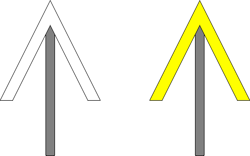
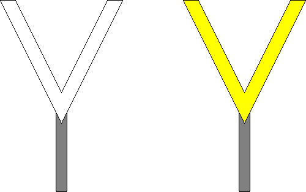

(1) Bedeutung
a) Pflugscharr heben.
Signalbuch-Online
Signal Ne 7 – Schneepflugtafel
Informationen zur Bedeutung, Beschreibung, Aufstellung und den Besonderheiten des Signals Ne 7 für Schneepflüge.
(2) Beschreibung a)
Eine weiße Pfeilspitze mit schwarzem Rand zeigt nach oben oder eine gelbe Pfeilspitze mit schwarzem Rand zeigt nach oben.

(3) Bedeutung b)
b) Pflugscharr senken.
(4) Beschreibung b)
Eine weiße Pfeilspitze mit schwarzem Rand zeigt nach unten oder eine gelbe Pfeilspitze mit schwarzem Rand zeigt nach unten.

(5)
Das Signal gilt nur für Schneepflüge mit beweglichen Pflugscharen.
(6) Aufstellung
Das Signal Ne 7 b) darf abweichend von der Regel auf eingleisiger Strecke unmittelbar links vom Gleis aufgestellt sein, wenn es sich am Träger des Signals Ne 7 a) für die Gegenrichtung befindet.
(7) Verzicht auf Aufstellung
Auf die Aufstellung des Signals Ne 7 b) darf verzichtet werden, wenn das Ende des zu kennzeichnenden Gleisabschnittes durch das Signal Ne 7 a) der Gegenrichtung erkennbar ist.